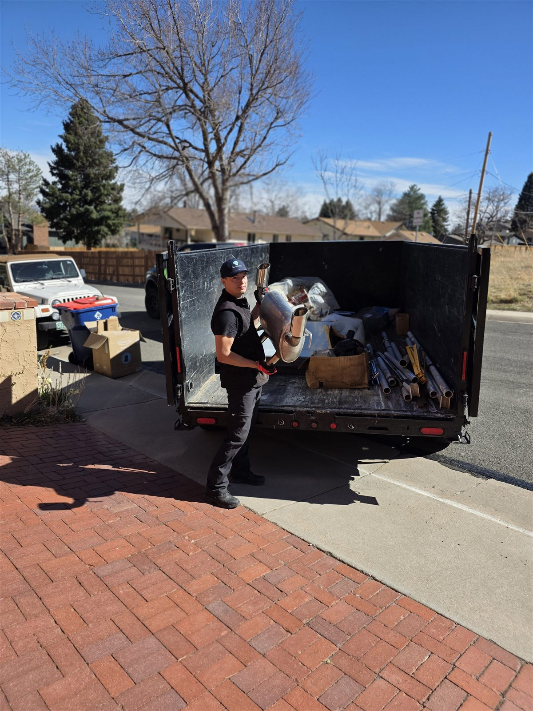

Behind the Scenes
What Actually Happens to Your Junk After We Haul It Away

The truck pulls away and the job feels done — but for us, that's really where the sorting starts. Every load we haul gets broken down the same way, in the same order: donate what's still usable, recycle what can't be donated, and only send what's left to the landfill.
Donation comes first
It starts with a quick walk-through before we even load anything. Furniture in decent shape, working appliances, usable building materials — those get set aside for donation instead of getting thrown in with everything else. On estate cleanouts especially, this step matters a lot; a lot of what looks like "junk" to one household is exactly what another family or a local nonprofit needs.
Recycling comes next
Anything that can't be donated gets checked for recycling. Electronics are one of the biggest categories here — TVs, computers, and other e-waste get recycled the eco-friendly way instead of going into a landfill where they don't belong. Old refrigerators, washers, and other appliances go through proper Freon-compliant disposal, which is required by law but also just the responsible way to handle them.
The landfill is the last resort
Only after donation and recycling are exhausted does anything head to the landfill — and even then, debris like dirt, rock, concrete, and brick gets handled through the right disposal channels rather than just dumped.
Curious about a specific item?
It's a few extra steps on our end, but it's the right way to run a junk removal business in a city we actually live and work in. If you're curious how a specific item of yours would be handled, just ask when you book — we're happy to walk through it.
Common questions
Donation & disposal FAQ
Do you donate items before recycling or disposing of them?
Yes — every load gets a walk-through before loading, and anything still usable is set aside for donation first, before recycling or disposal are even considered.
What happens to electronics and appliances?
Electronics like TVs and computers are recycled the eco-friendly way instead of going to a landfill, and appliances with Freon, like fridges, freezers, and AC units, go through proper Freon-compliant disposal, which is required by law.
Does anything end up in the landfill?
Only what's left after donation and recycling are exhausted — and even then, debris like dirt, rock, concrete, and brick is handled through the right disposal channels rather than just dumped.
Can I ask how a specific item will be handled?
Absolutely — just ask when you book and we'll walk you through it.
Reclaim your space today
Call or text 303-990-1812 for a free estimate — let us haul your stress away.